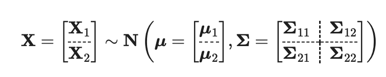

Chapter 24 Cheatsheet
24.1 Probability
\[ \begin{gathered} \text{Variance: } \mathbb{V}(Z) = \mathbb{E}(Z^{2})-\mathbb{E}(Z)^{2}\\ \\ \text{Lin Com of RV: } Z = wA + (1-w)B\\ \mathbb{E}(Z) = \theta \implies w = \frac{\theta -\mu_{B}}{\mu_{A}-\mu_{B}}\\ Var(Z) = w^{2}Var(A) + (1-w)^{2}Var(B) - 2\underbrace{ Cov(A,B) }_{ Cor(A,B)\cdot \sigma(A)\cdot\sigma(B) } \end{gathered} \]
MLE Estimator for parameter \(\theta\) in \(f(x)\): \[ \begin{gathered} L(\theta) = \prod^{n}_{i=1} f(x;\theta)\\ l(\theta) = \sum^{n}_{i=1} f(x;\theta)\\ \text{set } \frac{ \partial l }{ \partial \theta } = l'(\theta) = 0, \text{solve for } \theta \end{gathered} \]
Moment Generating Functions Characteristic functions \[ \begin{gathered} \text{MGF:} m_{X}(t) = \mathbb{E}(e^{tX})=\sum^{\infty}_{k=1} \frac{t^{k}}{k!}\mathbb{E}[X^{k}] = \int_{-\infty}^{\infty} e^{tx}f_{X}(x) \, dx \\ \text{Char Fnc: } \phi_{X}(t) =\mathbb{E}(e^{itX}) = \mathbb{E}[\cos (tX)+i\sin(tX)]\\ \text{Let } X \sim \text{Stable, sym about 0} \implies CF(X) = \phi(t) = e^{-c|t|^{\alpha}} \end{gathered} \]
Normal distribution \[ \phi(x) = \frac{1}{\sigma\sqrt{ 2\pi }}\exp \left\{ -\frac{1}{2}\left( \frac{x-\mu}{\sigma} \right)^{2} \right\} \] Facts:
Summing i.i.d RVs with infinite variance \(\to\) Heavy-tailed Distributions
Summing i.i.d RVs with finite variance \(\to\) Normal Distributions
Summing i.i.d STABLE random variables \(\to\) Stable Distribution
Summing i.i.d heavy-tail (\(0<\alpha < 2)\) random variables \(\to\) Stable Distribution
Finite mixtures: It suffices to show (due to induction) that a convex combination of 2 copulas \(\left(C()=w C_1()+(1-w) C_2, \quad \forall w \in[0,1]\right)\) is also copula. We are given that a convex combination of two CDFs is a CDF, and this result holds for any number of dimensions. The last piece is to show that the marginals are Uniform \((0,1)\). Since the initial copulas have Uniform \((0,1)\) marginals, it is straightforward to see that that mixture copula will also have Uniform \((0,1)\) marginals: for 1D Uniforms CDFs \(F_1(u)=F_2(u)=u, \quad \forall u \in[0,1]\), we have \(F(u)=w F_1(u)+(1-w) F_2(u)=w u+(1-w) u=u, \quad \forall u \in[0,1]\)
24.3 Series
24.3.1 Integrated series
A variable that is not stationary but it’s differences are, is called an integrated series. \(\left\{ X_{t} \right\}\) is not stationary but \(\left\{ \nabla X_{t} = X_{t} - X_{t-1}\right\}\) is.
- E.g. If log returns are stationary, then the log prices are integrated
24.3.2 Cointegration
Consider two integrated series \(\left\{ X_{t}, Y_{t} \right\}\) which behave as random walks, but if they seem to have some constant (stationary) relationship when linearly combined then they are called cointegrated. \[ \exists \ \alpha\ s.t.\ X_{t} + \alpha Y_{t} \sim Stationary \]
24.3.3 Brownian Motion
Brownian Motion (BM) forms the building block of continuous stochastic models Standard BM \(\left\{W_t\right\}\) is such that
\[ W_0=0 \quad \& \quad (W_t-W_s) \mid W_s \sim N(0, t-s) \] \[ \begin{gathered} Cov(W_{s},W_{t}) = min(s,t)\\ (W_{s}-W_{t}) \sim N(0, (s-t)) \quad \forall t<s \end{gathered} \] Using the inverse CDF method to generate random variates: \[ \begin{gathered} X \sim Pareto \implies F(x) = 1-\left( \frac{1}{x} \right)^{\alpha} = u \in [0,1]\\ P(X \leq x) = P(1-\left( \frac{1}{U} \right)^{\alpha} \leq x)=P(U \leq (1-x)^{-1/\alpha})\\ \implies F^{-1}(u) = (1-u)^{-1/\alpha} = x \end{gathered} \]
u = runif(n)
y = (1 - u)^(-1/3)24.3.4 Arithmetic BM/RW
Arithmetic BM (ABM) \(\left\{X_t\right\}\) with drift \(\mu\) & volatility \(\sigma\) is
\[ X_0=0 \quad \& \quad \left(X_t-X_s\right) \mid X_s \sim N\left(\mu(t-s), \sigma^2(t-s)\right) \]
- In form of Stochastic Differential Equation (SDE)
\[ d X_t=\mu d t+\sigma d W_t \Leftrightarrow X_t-X_0=\mu t+\sigma\left(W_t-W_0\right) \]
24.3.5 Geometric Brownian Motion
A transformation of the arithmetic brownian motion. We use this to avoid negative values.
Process \(\left\{S_t\right\}\) whose logarithm follows ABM \[ \begin{aligned} & \log \left(S_t\right)-\log \left(S_0\right)=\log \left(\frac{S_t}{S_0}\right)=X_t \sim N\left(\mu t, \sigma^2 t\right) \Leftrightarrow \\ & \Leftrightarrow S_t=S_0 \exp \left\{X_t\right\} \sim S_0 \times \log \operatorname{Normal}\left(\mu t, \sigma^2 t\right) \end{aligned} \]
As the log of \(\exp \left\{ X_{t} \right\} = X_{t}\) and \(X_{t} \sim Normal(\mu t, \sigma^{2}t)\)
24.4 Distributions
24.4.1 Multivariate Normal

| Property | Formula |
|---|---|
| Marginals: | \[\quad \mathbf{X}_1 \sim \mathbf{N}\left(\boldsymbol{\mu}_1, \boldsymbol{\Sigma}_{11}\right)\] |
| Linear combinations: | \[\mathbf{a}+\mathbf{B}^{\top} \mathbf{X} \sim N\left(\mathbf{a}+\mathbf{B}^{\top} \boldsymbol{\mu}, \mathbf{B}^{\top} \boldsymbol{\Sigma} \mathbf{B}\right)\] |
| Conditionals : | \[\mathbf{X}_1 \mid\left(\mathbf{X}_2=\mathbf{x}\right)\sim\mathrm{N}\left(\boldsymbol{\mu}_1+\boldsymbol{\Sigma}_{12}\boldsymbol{\Sigma}_{22}^{-1}\left(\mathbf{x}\boldsymbol{\mu}_2\right),\boldsymbol{\Sigma}_{11}-\boldsymbol{\Sigma}_{12}\boldsymbol{\Sigma}_{22}^{-1}\boldsymbol{\Sigma}_{21}\right)\] |
24.4.2 Heavy-tailed distribution:
- has an infinite MGF
- Heavy tailed distributions can also have infinite moments (including the mean!)
- \[ \mathbb{E}(X^{k}) = \infty \text{ for } k \geq \alpha \]
24.4.3 Stable Distribution:
- If the sum of two individual identical ones gives the same distribution (up to location & scale parameters), than distribution is Stable
- Ex. Sum of two i.i.d Normals is Normal \(\implies\) Normal Distribution is stable
- All stable distributions (besides the Normal) have heavy tails with tail index \(=\alpha\) in the characteristic function
24.4.5 Gamma distribution:
\[ \begin{gathered} {\displaystyle f(x)={\frac {\beta ^{\alpha }}{\Gamma (\alpha )}}x^{\alpha -1}e^{-\beta x}}\\ {\displaystyle F(x)={\frac {1}{\Gamma (\alpha )}}\gamma (\alpha ,\beta x)}\\ \mathbb{E}(x) = {\frac {\alpha }{\beta }} \quad \mathbb{V}(x) = {\displaystyle {\frac {\alpha }{\beta ^{2}}}}\\ \int_0^{\infty} \lambda^{\alpha-1} e^{-(\beta+x) \lambda} d \lambda = \frac{\Gamma(\alpha)}{(\beta+x)^\alpha} \end{gathered} \]
24.4.6 Exponential distribution:
\[ \begin{gathered} X \sim Exp(\lambda)\\ f(x) = \lambda e^{{-\lambda x}}\\ F(x) = {\displaystyle 1-e^{-\lambda x}}\\ \mathbb{E}(x) = \frac{1}{\lambda} \quad \mathbb{V}(x) = \frac{1}{\lambda^{2}} \end{gathered} \]
Example of integral of a mixture model: \[ \begin{gathered} Z = \frac{X}{Y}\\ F_{Z}(z) = P(Z\leq z) = P(X/Y \leq z)\\ = \int_{domain \ Y} P(X/Y < z|Y = y) dF_{Y}(y) = \int P(X < yz) f_{Y}(y) \, dy\\ \end{gathered} \]
24.4.7 1st Theorem: Fisher-Tippet-Gnedenko
\[ \begin{aligned} H(x) &= \begin{cases} Gumbel & \exp\{-e^{-x}\} \quad\quad x \in \mathbb{R}\\ Frechet & \begin{cases} 0 & x < 0 \\ \exp\{-x^{-\alpha}\} & x >0 \end{cases}\\ Weibull & \begin{cases} \exp\{-|x|^{\alpha}\} & x<0 \\ 1 & x > 0 \end{cases} \end{cases} \end{aligned} \]
24.4.8 Generalized Extreme Value (GEV) Distribution
\[ \begin{aligned} H(x) &= \exp\left\{ -\left( 1+\xi\frac{x-\mu}{\sigma} \right)^{-1/\xi}_{+} \right\}\\ \text{Where } \mu &= \text{location}\\ \sigma &= \text{scale}\\ \xi &= \text{shape parameters} \begin{cases} \xi>0 & \text{heavy tails (Frechet)} \\ \xi=0 & \text{exponential tails (Gumbel)} \\ \xi < 0 & \text{short/light tails (Weibull)} \end{cases} \end{aligned} \]
24.4.9 Normal scale mixture
\(Y = \mu+\sqrt{ V } \cdot Z\) Where \(V\) is a RV with non-negative mixing distribution and represents a random sd of \(Y\).
Example (probably don’t need to memorize…) which is used when simulating returns, as seem in PS2 Q4c part ii and iii.
\[ \begin{aligned} \text{t-dist } t &= Z\sqrt{ v/W } \quad \text{ where } W \sim \chi^{2}(df=v)\\ \text{GARCH model } r_{t} &= \mu + \sigma_{t}Z_{t} \quad \text{ where } \sigma^{2}_{t} = \omega + \sum^{p}_{i=1}a_{i}r^{2}_{t-i}+\sum^{q}_{j=1}\beta_{j}\sigma^{2}_{t-j}\\ \end{aligned} \]
24.5 Copula
[[4-Multivariate-Return-Modelling]] https://richardye101.github.io/STAD70/copulas.html
\[ \begin{gathered} \text{Independence Copula: } C_{indep} (u_{1}, \dots u_{d}) = u_{1} \times \dots \times u_{d}\\ \text{Archimedean Copula: } C_{arch}(u_{1}, \dots u_{d}) = \phi ^{-1}(\phi(u_{1})+\dots+\phi(u_{d}))\\ \text{Given multi/uni var CDF $\phi_{\rho}, \phi$: } C_{\rho}(u_{1},\dots ,u_{d}) = \Phi_{\boldsymbol{\rho}}(\Phi ^{-1}(u_{1}), \dots, \Phi ^{-1}(u_{d}))\\ \\ \text{Copula Properties} \\ \underline{C}\left(u_1, \ldots, u_d\right) \leq C\left(u_1, \ldots, u_d\right) \leq \bar{C}\left(u_1, \ldots, u_d\right) \\ \text { where } \begin{cases} \underline{C}\left(u_1, \ldots, u_d\right)=\max \left\{1-d+\sum_{i=1}^d u_i, 0\right\} = \max\left\{ 1 - \left(\sum^d_{i=1} 1 - u_{i}\right),0 \right\} \\ \bar{C}\left(u_1, \ldots, u_d\right)=\min \left\{u_1, \ldots, u_d\right\} \end{cases} \end{gathered} \]
If you have a copula and the marginal CDF’s, you can obtain the multivariate CDF of all the marginals. The inverse is true, where you can take a multivariate CDF and come up with a copula to represent the dependency between the marginal distributions, and the marginal distributions themselves. \(F(x_{1},\dots x_{d}) = C(F_{1}(x_{1}), \dots, F_{d}(x_{d}))\)
24.6 Portfolio Theory
- To achieve a \(\mu_{p}\) in a two asset portfolio, the weight \[w = \frac{\theta -\mu_{B}}{\mu_{A}-\mu_{B}}\]
- \[ \begin{aligned} \text{Gross Returns:}&\\ R'(t) &= \frac{S(t)}{S(t-1)}\\ \text{Net Returns:}&\\ R(t) &= R'(t)-1 = \frac{S(t)-S(t-1)}{S(t-1)}\\ \text{Log Returns:}&\\ r(t) &= \log(R'(t)) = \log\{S(t)\}-\log\{S(t-1)\}\\ \end{aligned} \]
- Min-variance portfolio weights are \[\vec{w} = \frac{\Sigma^{-1} \vec{1}}{\vec{1}^{T}\Sigma ^{-1} \vec{1}}\] if we have a variance matrix, we can calculate the minimum weights for each asset using:
weights = rowSums(S_inv)/sum(S_inv)24.7 Factor Model
24.7.1 Assumptions
- Factors \(F_j(t)\) are stationary, with moments: \[ E[\mathbf{F}(t)]=\boldsymbol{\mu}_F \quad \& \quad \operatorname{Var}[\mathbf{F}(t)]=\boldsymbol{\Sigma}_F \]
- Asset-specific errors \(\varepsilon_i(t)\) are uncorrelated with common factors: \[ \operatorname{Cov}[\mathbf{\varepsilon}(t), \mathbf{F}(t)]=\mathbf{0} \]
- Errors are serially & contemporaneously uncorrelated across assets \[ \operatorname{Var}[\boldsymbol{\varepsilon}(t)]=\operatorname{diag}\left[\left\{\sigma_{\varepsilon_i}^2\right\}_{i=1, \ldots, N}\right]=\boldsymbol{\Sigma}_{\varepsilon} \quad \& \operatorname{Cov}[\boldsymbol{\varepsilon}(t), \boldsymbol{\varepsilon}(s)]=\mathbf{0} \]
24.7.2 In R
Fitting a factor model to a list of returns of assets using factanal(x, factors=2), we can extract the factor loadings \(\mathbf{B}\) and uniqueness \(\mathbf{V}\) which can be used to calculate the sample correlation matrix along with the sample variance matrix \(\mathbf{SS}^{T}\)
\[ Var = (\mathbf{B}\mathbf{B}^{T}+diag(\mathbf{V}) ) (\mathbf{SS}^{T}) \]
24.8 Risk Mgmt
24.8.1 VaR
Calculating the \(VaR_{\alpha}\) at a \((1-\alpha)\) confidence level: \[ \begin{gathered} P(L\leq VaR_{\alpha}) = 1-\alpha = F(VaR_{\alpha})\\ \text{Essentially Isolate $VaR_{\alpha}$: } VaR_{\alpha} = F^{-1}(1-\alpha) \end{gathered} \]
If \(L\) follows a normal distribution, then \(VaR_{\alpha}(L) = -S_{i} \times (\mu_{i}+\sigma_{i}z_{\alpha})\) where \(S_{i}\) is the initial investment, and \(z_{\alpha}=\Phi ^{-1}(\alpha)\).
24.8.2 Conditional VaR (CVaR)
is the mean loss in the upper \(\alpha\) area of the loss distribution. \[ -\frac{1}{\alpha} \int_{0}^{\alpha} VaR_{u}(L) \, du = \mathbb{E}(L|L\geq VaR_{\alpha}) \]
24.8.3 Entropic VaR (EVaR)
EVaR defined as: \(\mathrm{EVaR}_\alpha=\inf _{z>0}\left\{z^{-1} \ln \left(M_L(z) / \alpha\right)\right\}\)
can use R to find the infemum (value of z such that the function is minimized)
fn = function(z){ log( ( 0.04 * exp( 95*z ) + 0.96 * exp(-5*z) )
/ 0.05 ) / z }
optimise(fn, c(0,1) )24.8.4 Risk Measure Properties
\(\rho\) here is VaR, CVaR, or EVaR
For this measure \(\rho\) to reasonably quantify risk, it must: 1. be normalized \(\rho(0)=0\) (risk of holding no assets is 0) 2. Translation invariance: \(\rho(L+c) = \rho(L) + c \ \forall c \in \mathbb{R}\) - adding a loss \(c\) to the portfolio increases risk by exactly \(c\) 3. Positive Homogeneity: \(\rho(bL) = b\rho(l)\) - scaling portfolio returns also will scale risk 4. Monotonicity: \(L_{1}\geq L_{2} \implies \rho(L_{1}) \geq \rho(L_{2})\) - The ordering of the random variables is almost surely \(P(L_{1}\geq L_{2})=1\) 5. Sub-additivity: \(\rho(L_{1}+L_{2}) \leq \rho(L_{1}+L_{2})\) - Only when the two losses are perfectly correlated, then equal - The risk of two combined portfolios cannot exceed the sum of the two portfolio risks
24.9 Betting measures
Wealth after betting:
\[ \begin{aligned} V_n & =V_0 \prod_{t=1}^n(1+f a)^{I_t}(1-f b)^{1-I_t} \\ & =V_0(1+f a)^{\sum_{t=1}^n I_t}(1-f b)^{\sum_{t=1}^n\left(1-I_t\right)} \\ & =V_0(1+f a)^{W_n}(1-f b)^{n-W_n} \end{aligned} \]
Kelly criterion (which maximizes expected log wealth): \[ \begin{gathered} \text{Win amt:} a \quad \text{Lose amt:} b \quad P(win) = p \quad P(lose) = q\\ \text{Kelly Crit: } f^{\star} = \frac{ap-bq}{ab} \quad \text{or } 2p-1 \text{ in the simple case} \end{gathered} \]
24.10 Arbitrage
24.10.1 Pairs Trading
We trade if we have: \[ \begin{gathered} \text{Profitable if: } \frac{P1_{c}}{P1_{o}} - \frac{P2_{c}}{P2_{o}} \ne 0\\ \implies \frac{P1_{c}}{P1_{o}} < \text{ or }> \frac{P2_{c}}{P2_{o}}\\ \text{Where: } q_{1} =\frac{1}{P1_{o}}, q_{2} = \frac{1}{P2_{o}} \end{gathered} \]
Our strat is profitable if in the end, we trade P1 and P2 with money left over, in the same quantities we entered the positions with. (Could buy/sell either side)
If we assume the prices of the stocks have a stationary linear relationship \(P_{t} − \lambda S_{t}\). Furthermore, assume that you open a trade when \(P_{o} − \lambda S_{o} > 0\), and you close it when \(P_{c} − \lambda S_{c} = 0\). This is profitable given the conditions with net profit of \((P_{o}−\lambda S_{o})−(P_{c}−\lambda S_{c}) > 0\).
24.11 Simulation
In Monte Carlo, there may always be some time point that we did not simulate, where the barrier could have been crossed and the value of the an option, ex \(C_{U\&O}\) would have been worthless. Hence the monte carlo simulation will always overestimate the value of an barrier option, because it underestimates the maximum.
24.11.1 Simple Monte Carlo estimator
\[ \begin{gathered} \bar{Y} = \frac{1}{2n}\sum^{2n}_{i=1} Y_{i}\quad \text{where } Y_{i} = f(Z_{i}), Z_{i} \sim N(\mu,\sigma^{2})\\ Var(\bar{Y}) = \mathbb{E}[f^{2}(z)]\\ \end{gathered} \]
Generating paths of options: We can generate values of \(M_{T}\) directly by generating a standard brownian motion \(W_{T}\) and setting \(M_{T} = |W_{T}|\). We then estimate the probability that \(|W_{T}|\) crosses 1, and as we generate more Normal RVs (\(W_{T}\)), the probability will converge.
24.11.2 Procedure to generate maxima
Procedure for simulating maxima of arithmetic BM: 1. Generate \(X_T \sim N\left(\mu T, \sigma^2 T\right)\) 2. Generate \(U \sim \operatorname{Uniform}(0,1)\) 3. Calculate \(M_T \mid X_T=\frac{X_T+\sqrt{X_T^2-2 \sigma^2 T \log (U)}}{2}\)
24.11.3 Risk Neutral Pricing
The arbitrage-free price of any European derivative with payoff \(G_T=f\left(S_T\right)\) is given by discounted expectation w.r.t. RN measure \[ G_0=\mathbb{E}\left[e^{-r T} G_T\right]=\mathbb{E}\left[e^{-r T} f\left(S_T\right)\right] \]
The risk-neutral pricing measure:
\[ \begin{gathered} \mathbb{E}(S) = S_{0}e^{rt}\\ \mathbb{E}\left( \frac{S_{t}}{e^{rt}}\right) = S_{0} \quad \text{ or more generally } \mathbb{E}\left( \frac{S_{t}}{e^{rt}} |S_{s} \right) = \frac{S_{s}}{e^{rt}} \end{gathered} \]
24.11.4 Black Scholes European Call
\[ \begin{gathered} C = S_{0}\Phi(d_{1}) - e^{-rT}K\Phi(d_{2})\\ \text{Where: }\ d_{1} = \frac{\ln(S_{0}/K)+\left( 2+\frac{1}{2}\sigma^{2} \right)T}{\sigma \sqrt{ T }}, \quad d_{2} = d_{1}-\sigma \sqrt{ T } \end{gathered} \]
At the money call: \[ C = S_{0}\left[ \Phi(d_{1}) -e^{-rT}\Phi(d_{2}) \right] = S_{0} \left[ \Phi \left( \frac{\left( r+\frac{1}{2}\sigma^{2}T \right)}{\sigma \sqrt{ T }} \right) -e^{-rT}\Phi \left( \frac{\left( r-\frac{1}{2}\sigma^{2} \right)T}{\sigma \sqrt{ T }} \right) \right] \] ## Pricing Derivatives
\[ \begin{gathered} \text{Joint CDF of W and max(W): } P(W_{T}\leq x, M_{T}\geq y) = \underbrace{ P(W_{T}\geq 2y-x, \overbrace{ M_{T}\geq y }^{ \text{always true} }) }_{\text{By relfection principle} }\\ \text{W is Normally distributed: } P(W_{t} \leq x) = \Phi(x)\\ \\ \text{Rayleigh Dist: } P(M_{T}\leq m | X_{T} = b) = 1 - \exp \left\{ -2 \frac{m(m-b)}{\sigma^{2}T} \right\} \quad \forall m\geq (0 \cup B) \end{gathered} \]
24.12 Variance Reduction
24.12.1 Anti-thetic Variable
\[ \begin{gathered} \text{Anti-thetic Variable: } \bar{Y}_{AV} = \frac{1}{2n} \left( \sum^{n}_{i=1}Y_{i} + \sum^{n}_{i=1}\tilde{Y}_{i} \right) = \frac{1}{n}\sum^{n}_{i=1} \frac{Y_{i}+\tilde{Y}_{i}}{2}\\ Y_{i} = f(Z_{i}), \tilde{Y}_{i} = \tilde{f}(-Z_{i})\\ \\ \bar{Y}_{AN} \text{ is sample mean of iid } RV_i:\frac{Y_{i}+\tilde{Y}_{i}}{2}\\ \text{by CLT } \bar{Y_{AN}} \sim^{approx} N\left( \mathbb{E}\left[ \frac{Y_{i}+\tilde{Y}_{i}}{2} \right], \frac{1}{n} \mathbb{V}\left[ \frac{Y_{i}+\tilde{Y}_{i}}{2} \right] \right)\\ \end{gathered} \]
The payoff is only worthwhile if \(f(Z)\) is not an even function, as if it was, then \(\frac{Y_{i}+\tilde{Y}_{i}}{2}\) would simply be \(Y_{i}\) and that wouldn’t help us decrease variance.
24.12.2 Stratification
This is inspired by statistical sampling. Idea: Split RV domain into equi-probable strata and draw equal number of variates from within each one.
\[ \begin{aligned} & \bar{Y}_{S t r}=\frac{1}{m} \sum_{j=1}^m \bar{Y}^{(j)}, \text { where } \bar{Y}^{(j)}=\frac{1}{n} \sum_{i=1}^n f\left(Z_i^{(j)}\right) \\ & Z_i^{(j)} \sim^{\text {iid }} N\left(0,1 \mid Z_i^{(j)} \in A_j\right), j=1, \ldots, m\\ \mathbb{E}(\bar{Y}_{Str}) &= \sum^{m}_{j=1}\mathbb{E}\left[ f(Z) | Z \in A_{j}\right] \cdot P(A \in A_{j})\\ \mathbb{V}(\bar{Y}_{str})&= \frac{1}{mn} \left\{ \mathbb{E}\left[ f^{2}(z) - \frac{1}{m}\sum^{m}_{j=1}\mu_{j}^{2} \right] \right\} \leq \underbrace{ \mathbb{V}\left[ \bar{Y} \right] = \frac{1}{mn}\left\{ \mathbb{E}\left[ f^{2}(z)-\mu^{2} \right] \right\} }_{ \text{Simple Random Sample} } \leq \underbrace{ \mathbb{E}[f^{2}(z)] }_{ \text{MC Est Var} }\\ &\iff \frac{1}{m} \sum^{m}_{j=1} \mu_{j}^{2} \geq \mu^{2}\\ \text{Where } \mu &= \frac{1}{m} \sum^{m}_{j=1}\mu_{j} = \sum^{m}_{j=1}\underbrace{ \mathbb{E}\left[ f(z)|z\in A_{j} \right] }_{ \mu_{j} }\underbrace{ P(A_{j}) }_{ 1/m } \end{aligned} \]
W21 Midterm Part e, integrating gamma:
\[ \begin{aligned} \bar{F}_X(x) & =P(X>x)(\text { Law of Total Prob. }) \\ & =\int_0^{\infty} \overbrace{P(X>x \mid \Lambda=\lambda)}^{\sim \operatorname{Exp}(\lambda)} \overbrace{f_{\Lambda}(\lambda)}^{\sim \operatorname{Gamma}(\alpha, \beta)} d \lambda \\ & =\int_0^{\infty} e^{-\lambda x} \frac{\beta^\alpha}{\Gamma(\alpha)} \lambda^{\alpha-1} e^{-\beta \lambda} d \lambda \\ & =\frac{\beta^\alpha}{\Gamma(\alpha)} \int_0^{\infty} \lambda^{\alpha-1} e^{-(\beta+x) \lambda} d \lambda \\ & =\frac{\beta^\alpha}{\Gamma(\alpha)} \frac{\Gamma(\alpha)}{(\beta+x)^\alpha} \\ & =\left(\frac{\beta}{\beta+x}\right)^\alpha \\ & =1-1+\left(\frac{\beta+x}{\beta}\right)^{-\alpha} \\ & =1-\overbrace{\left[1-(1+x / \beta)^{-\alpha}\right]}^{\operatorname{CDF} \text { or GPD }(\gamma=1 / \alpha, \sigma=\beta / \alpha)} \end{aligned} \]